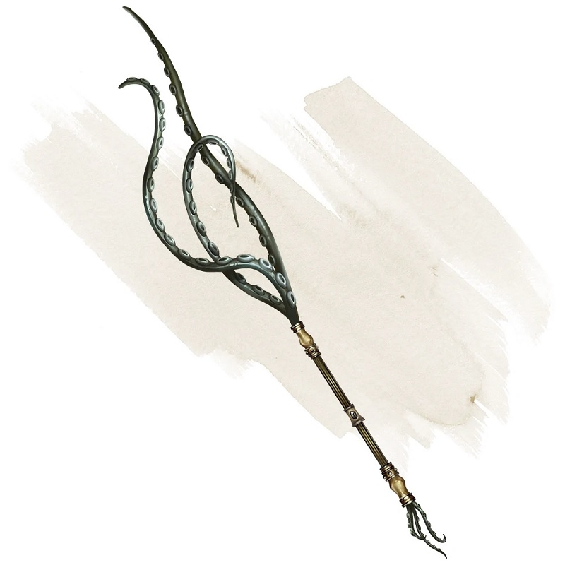

Sceptre tentacule
[ Tentacle Rod ]
Sceptre, rare (nécessite un lien)
Fabriqué par le drow, ce sceptre est une arme magique qui se termine par trois tentacules caoutchouteux. Si vous tenez le sceptre, vous pouvez utiliser une action pour que chaque tentacule attaque une créature que vous pouvez voir dans un rayon de 4,50 mètres autour de vous. Chaque tentacule fait un jet d'attaque au corps à corps avec un bonus de +9. S'il touche, le tentacule inflige 1d6 dégâts contondants. Si les trois tentacules touchent une même cible, celle-ci doit faire un jet de sauvegarde de Constitution DD 15. En cas d'échec, la vitesse de la créature est réduite de moitié, elle a un désavantage à ses jets de sauvegarde de Dextérité, et ne peut pas utiliser de réaction pendant 1 minute.
En outre, à chacun de ses tours, elle peut prendre une action ou une action bonus, mais pas les deux. À la fin de chacun de ses tours, on peut répéter le jet de sauvegarde, mettant fin à l'effet sur soi-même en cas de réussite.
En outre, à chacun de ses tours, elle peut prendre une action ou une action bonus, mais pas les deux. À la fin de chacun de ses tours, on peut répéter le jet de sauvegarde, mettant fin à l'effet sur soi-même en cas de réussite.
Dungeon Master´s Guide (BR)
